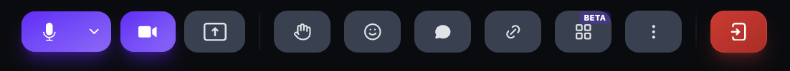
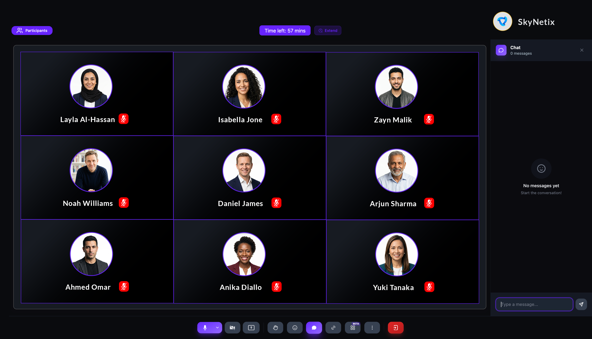
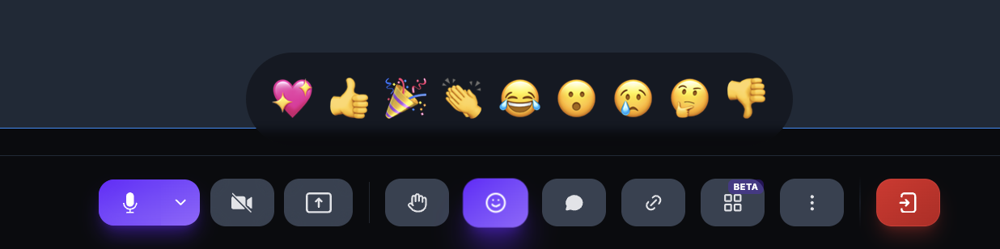
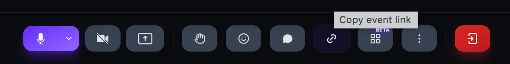
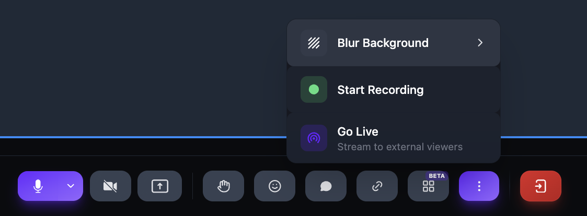
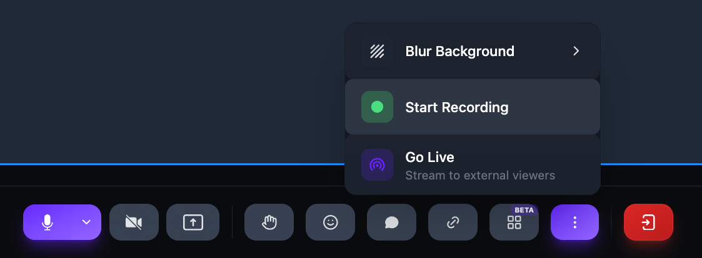
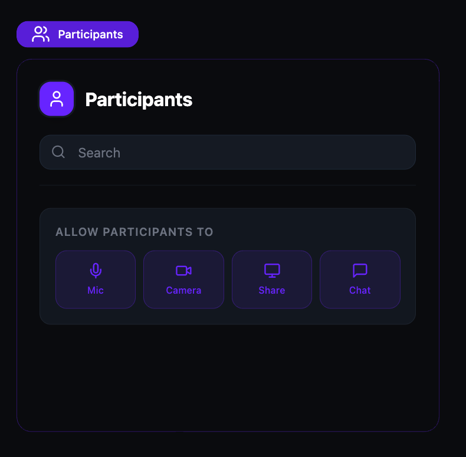
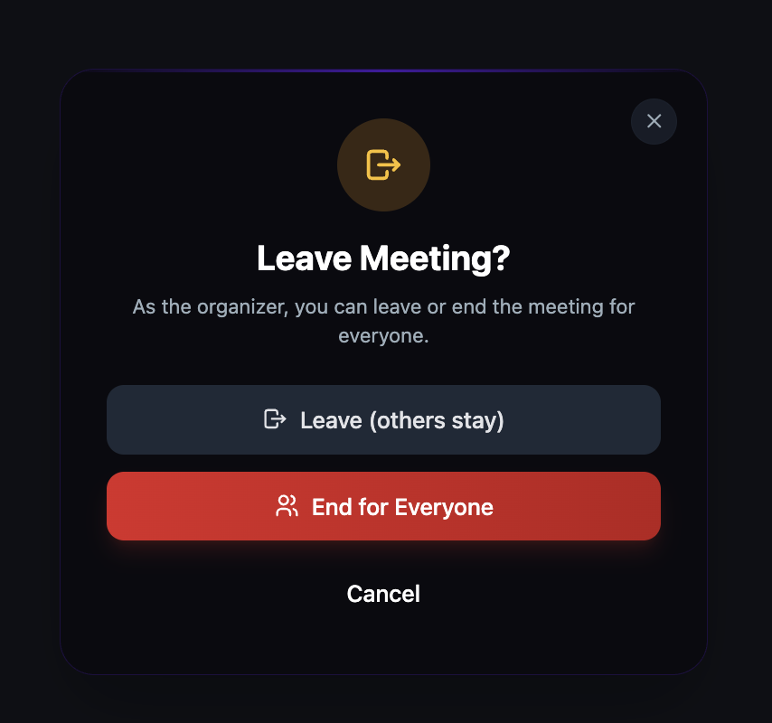

Use the video call toolbar
The call toolbar appears at the bottom of every live session. It contains controls for audio, video, screen sharing, reactions, chat, breakout rooms, recording, live streaming, and background effects. This article covers every control in the toolbar and the panels they open.
Before you get started
- You must be in an active live session to access the call toolbar.
- Some controls are available to all participants. Controls marked Host require a host or moderator role.
Toolbar overview
The toolbar is visible to all participants during a session. Hover over or near the bottom of the call window to reveal it.

The toolbar contains the following controls, from left to right:
- Microphone — toggle your mic on or off. Click the dropdown arrow to select a different audio input device.
- Camera — toggle your camera on or off. When off, your profile photo is displayed.
- Screen Share — share your entire screen, an application window, or a browser tab. While sharing, you can enable annotations to draw on the shared content.
- Raise Hand — raise your hand to signal you want to speak. The host sees raised hands in order.
- Reactions — send a floating emoji reaction visible to all participants.
- Chat — open the chat panel to send text messages during the session.
- Copy Event Link — copy the session link to your clipboard to share with others.
- Breakout Rooms (Beta) — split participants into smaller groups for focused discussions. Host only.
- More (three dots) — access background effects, recording, and live streaming controls.
- Leave (red) — leave the session. Hosts can leave or end the session for everyone.
Navigate the session view
The main session view displays participants in a grid layout. The top bar provides session-level controls and information.

The top bar contains:
- Participants (top left) — click to open the Participants panel.
- Time left (center) — shows remaining session time.
- Extend (next to timer) — extend the session duration.
- Organization branding (top right) — your organization's logo and name.
Side panels for Chat, Breakout Rooms, and Participants open on the right side of the screen.
Send emoji reactions
- Click the Reactions button (smiley face) in the call toolbar.
- Select an emoji from the reaction menu: ❤️ 👍 🎉 👏 😂 😮 😢 🤔 👎
- The emoji appears as a floating animation visible to all participants for a few seconds.

Copy the event link
- Click the Link icon (chain) in the call toolbar.
- The session link is copied to your clipboard. A Copy event link tooltip confirms the action.
- Paste the link in a message, email, or community post to invite others.

Create breakout rooms
- Click the Breakout Rooms icon in the call toolbar.
- The Breakout Rooms panel opens on the right side of the screen.
- Click + Create Rooms.

- Set the Number of rooms using the + and − controls.
-
Choose an Assignment method:
- Manual — assign participants to rooms yourself.
- Random — the platform distributes participants automatically.
- Set the Duration: 5 min, 10 min, 15 min, or Custom.
- Click Create Rooms.

Annotate a shared screen
When screen sharing is active, you can draw annotations on the shared content in real time. Annotations are visible to all participants.
- While screen sharing is active, click the Annotations button (pencil icon) in the call toolbar to enable annotations.

- When annotations are enabled, the pencil icon turns purple to confirm the feature is active.

-
The annotation tools panel appears with the following controls:
- Draw (pencil icon, purple) — freehand draw on the shared screen.
- Eraser — erase individual annotations.
- Color picker — choose a drawing color: black, red, blue, or white.
- Delete all — clear all annotations at once.
- Close — close the annotation tools panel.

Use the More menu
Click the More button (three dots) in the call toolbar to access three additional controls.

Set background effects
- Click the More button (three dots) in the call toolbar.
- Click Blur Background. The arrow indicates a submenu.
-
The Background Effects panel opens with the following options:
- No Background — shows your actual background.
- Blur Background — softens your background while keeping you in focus.
- Virtual backgrounds — replace your background with an image: Modern Study, Minimalist Blue, Cozy Library, Modern Office, City Skyline, or Indoor Plants.
- Select an option. The change applies immediately.

Start recording
- Click the More button (three dots) in the call toolbar.
- Click Start Recording.
- A recording indicator appears at the top of the session. All participants are notified that the session is being recorded.

Go Live
- Click the More button (three dots) in the call toolbar.
- Click Go Live.
- The session is streamed to external viewers beyond the call participants.

Manage participants
- Click the Participants button in the top-left corner of the session view.
- The Participants panel opens with a search bar and a list of all participants.
-
Under Allow Participants To, toggle permissions on or off:
- Mic — allow or prevent participants from using their microphone.
- Camera — allow or prevent participants from turning on their camera.
- Share — allow or prevent participants from sharing their screen.
- Chat — allow or prevent participants from sending chat messages.

Leave or end a session
- Click the Leave button (red icon) at the far right of the call toolbar.
-
If you are the organizer, a dialog asks how you want to leave:
- Leave (others stay) — you leave the session but other participants can continue.
- End for Everyone — the session ends immediately for all participants.
- Click your choice, or click Cancel to return to the session.
